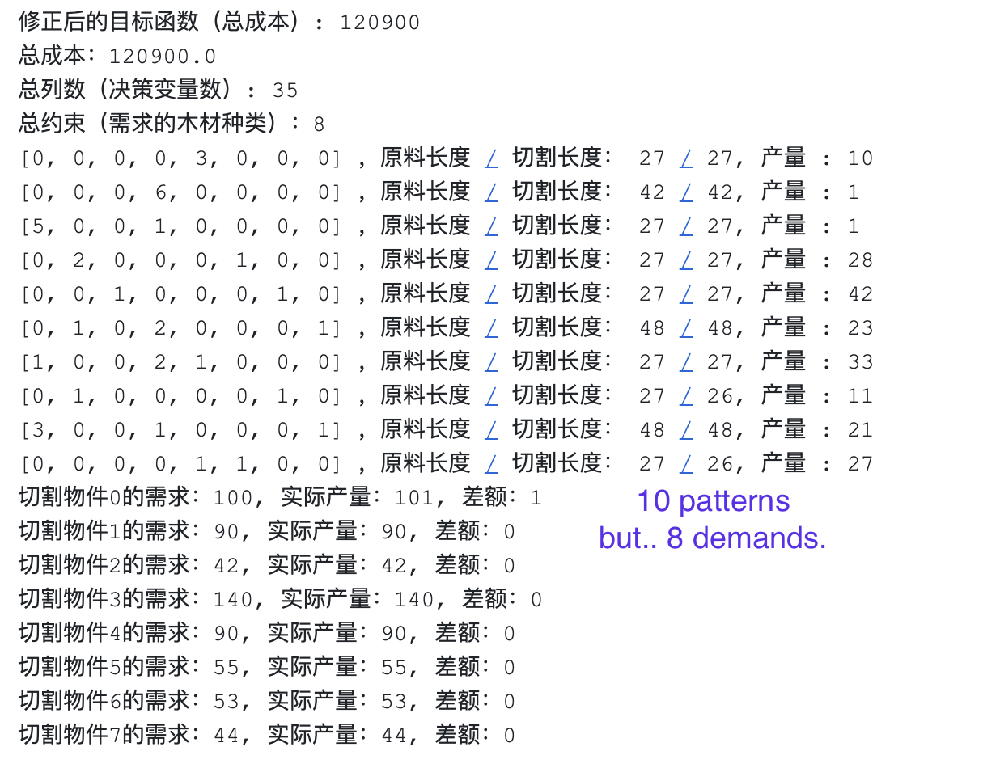
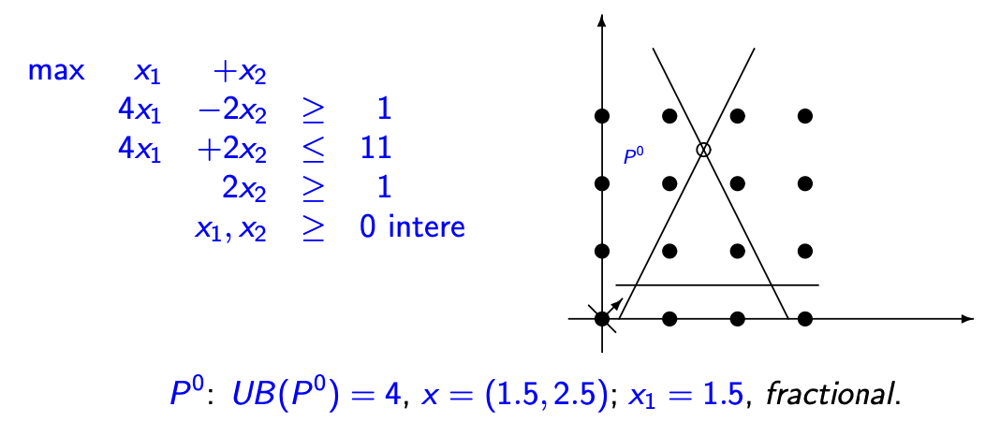
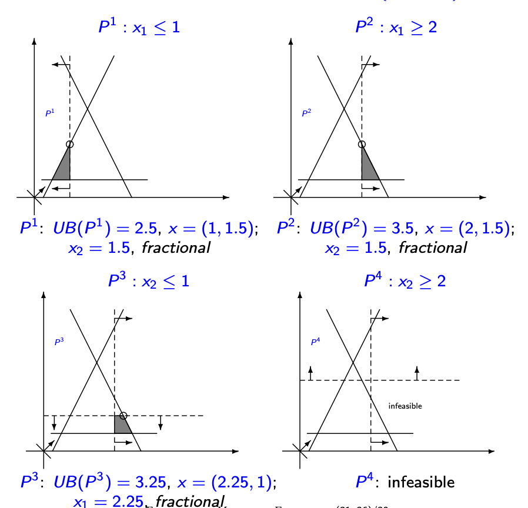

Branch and Price 分支定价算法¶
CSP的几个问题以及对应的回答¶
2 Questions
-
问题一 ：总共有 \(N\) 种不同长度的木料需求。单纯形法解决线性规划中，列数远多于行数，非0决策变量的数字应该 \(\leq \text{Num}_{constr}\)。为什么选择了多于 \(N\) 种的切法？
-
问题二 ：对于主问题求解的线性规划问题，通过对决策变量四舍五入之后，得到的解一定可以满足所有的需求吗？ 更加复杂的LP问题，怎么从LP得到IP问题的解？

- 问题1的解答 ：因为在严格的CSP的实现中，主问题并不是解一个LP，而是求解的IP。列生成仅仅是在生成列，减少主问题的整数变量的个数。这时候单纯形法的那些规则就不适用了。但是，只要主问题得到了一个解，就可以得出reduced cost，并不影响后面的列生成的操作。
Strict Master Problem:
\[\min \sum_j c_j x_j \\ s.t. \begin{aligned}\begin{equation*} \begin{cases} \sum_j \mathbb{a_j} \mathbb{x_j} \geq \mathbb{b} \\ x_j \in \mathbf{Z} \end{cases} \end{equation*}\end{aligned}\]Linear Master problem
\[\min \sum_j c_j x_j \\ s.t. \begin{aligned}\begin{equation*} \begin{cases} \sum_j \mathbb{a_j} \mathbb{x_j} \geq \mathbb{b} \\ x_j \geq 0 \end{cases} \end{equation*}\end{aligned}\]
- 问题2的解答 ：四舍五入，不一定可以得到一个满足所有需求的解。因为一些不足0.5的决策变量，依然有可能是必须的，缺少这些变量，可能会导致某些特定的需求缺斤少两。
- 问题2的延伸 ：在CSP问题中 ，向上取整，一定可以得到一个满足所有需求的解。因为向上取整后，在这个问题下是提供了冗余，并且问题本身并没有额外的约束。但是，这不一定是全局最优解。不过与全局最优解的Gap非常小。
数值试验的结果
| m (# of Supplies) | n(# of demand) | Gap | Running Time (s) |
|---|---|---|---|
| 3 | 50 | 0.10 % | 0.03 |
| 3 | 100 | 0.01 % | 0.20 |
| 4 | 100 | 0.6 % | 0.30 |
| 5 | 200 | 0.01 % | 1.10 |
| 5 | 300 | 0.04 % | 2.30 |
| 5 | 400 | 0.03% | 4.70 |
| 5 | 500 | 0.02% | 11.30 |
| 6 | 100 | 0.04 % | 5.20 |
| 6 | 200 | 0.07% | 18.60 |
- 问题2的第二个延伸 ：为什么CSP问题可以在Master Problem上直接向上取整？
- 没有对方案的个数进行限制。
简介
从列生成算法的缺点说起：依然是单纯形法，是一个线性规划问题。是不考虑整数约束的。在所有Set-Covering建模的场景下，都需要进行线性松弛。
所以，为了能够把列生成用来解决整数规划的问题，需要用到分支的方法：Branching。
MP -> LMP -> RLMP (L = linear)
如果 \(z^{*}_{RLMP}\) 是整数最优解，那么 \(z^{*}_{MP} == z^*_{RLMP}\)。而列生成是应用在求解 \(z^{*}_{RLMP}\) 上的。能不能在列生成基础上得到一个整数最优解呢？
比如一个决策变量序列：\((0,0,1,0,0, 0.4)\)
Paralle Machine Scheduling¶
有 \(m\) 台机器，有 \(n\) 项工作 (\(J_1, ...J_n\))。 记工作完成的时间是 \(C_j\)，记工作的权重为 \(w_j\)。需要把这些工作分配到机器上，使得所有工作完成时间的加权和最小。
同时满足如下假设：
- 工作一旦在某个机器上开始了，就不能中断；
- 同一个工作在所有机器上的加工时间是一样的；
- 每个工作的权重系数一定是大于0的；
- 每个机器同一时间只能加工一个产品；
一些特殊情况¶
-
当 \(m = 1\)，对工作按照重要性 / 时间排序后放到机器上即可。
-
当 \(m = 2\) ，利用动态规划可以直接求解。因为每个工作只有两种可能：机器1和机器2。同样地对工作排序后，依次放入能最早开始工作的那台机器上即可。
模型¶
定义一个Schedule：也就是这个机器上进行工作的一个序列。注意，即使机器上进行的是相同的某些工作，这些工作的先后顺序也会构成不同的Schedule。用 \(x_s\) （0-1 Binary）表示这个方案是否被选取；

| 标记 | 含义 |
|---|---|
| \(a_{js}\) | 如果工作 \(j\) 在方案 \(s\) 中，那么就为1，否则为0。以图为例，\(a_{14}, a_{54}, a_{84} = 1\), \(a_{23}, a_{93} = 1\)，以此类推。 |
| \(p_j\) | 完成工作 \(p\) 所需的时间 |
基于这种思想，我们可以把整个问题重新建模一下。
于是主问题变成了，怎么找一些“好的”方案，形成方案集合 \(S\)，在这个集合里进行选择 \(m\) 个，实现最小化加权完成时间呢？
子问题就是，怎么找这些“好的”方案，成为 \(x_s\) 。
Smith's Rule¶
问题本身具有一些特殊的性质。考虑到不同工作有不同的权重、不同的完成时间，最终的方案里，权重高、完成时间短的工作，一定是更先完成的。
【补充图】
反证法。
所以，先对所有工作，按照 \(\dfrac{w_j}{ p_j }\) 降序排序，实际上是对这个工作的单位价值排序。
对于最优解中给每一台机器分配的工作，一定是按照单位价值降序执行的；反过来讲，一个方案的工作序列，是Smith‘s Rule 排序后，索引的升序排列。
这个规则对于PMS问题的编程实现，还有一个重要作用。只需要知道某台机器上的工作是哪些（工作集合），就可以知道这台机器的成本系数，而不需要显式地给出执行序列。因为其执行序列实际上只是这个工作集合按照Smith Rule排序后的索引而已。
【补充图】
基于Smith's Rule对工作进行排序，此时所有工作的索引，表示了其单位价值（重要性），而且一个方案中的工作也一定按照索引升序出现。
| 标记 | 含义 |
|---|---|
| \(C_j\) | 工作 \(j\) 的完成时间 |
| \(C_j(s)\) | 工作 \(j\) 在方案 \(s\) 中的完成时间。如果方案 \(s\) 没有包含 \(j\)，则不存在 |
于是，\(C_j(s) = \sum^j_{k = 1}a_{ks}p_k\)。
并且，可以给出方案 s 的成本
在机器调度问题中，把并行机调度的问题记作： \(P_m || \sum^n_{j = 1} \omega_j C_j\)
Pricing Problem¶
我们规定，主问题里方案 \(s\) 的检验数记作 \(c^{'}_s\)，表达式 \(c^{'}_s = c_s - \lambda_0 - \sum^n_{j = 1}\lambda_j a_{js}\)。
注意到，我们主问题有2类约束和对应的对偶变量。\(\lambda_0\) 对应约束（1）：机器数量约束的对偶变量，\(\lambda_1, \lambda_2, ..., \lambda_n\) 对应了约束（2）：工作加工约束的对偶变量（\(n\) 个）。
对检验数进行整理，因为第一个约束中，每一个方案的系数都是相等的（ = 1），反映到对偶变量里就是 \(\lambda_0\) 为一个常数。所以整理检验数得：
测试当前解是否是最优解，只需要看是否存在一个方案的检验数是负的。
所以求Pricing Problem，就是要找一下检验数最小的备选方案，看看这个方案对应的检验数是否是负数，如果是，就加入主函数，如果最小检验数都 \(>= 0\) 了，说明已经找到了最优解，停止。
定价问题，就是输出一个（或者一些）方案，这些方案的检验数 \(< 0\)。反映在主问题里，就是一个 0 和 1 组成的、长度为 \(n\) 的列向量 \(\mathbf{a_{s + 1}} = (1, a_{1,s+1}, a_{2,s+1}, ..., a_{n, s + 1})^T\)。
定价子问题可以通过动态规划实现。
定义 \(F_j(t)\) ，表示：由工作集合 \(\{ J_1, J_2,...J_j \}\) 中的工作组成、在 \(t\) 时刻完成最后一项工作的所有方案中，最小的检验数。
minimum reduced cost for all machine schedules that consist of jobs from the set \(\{J_1;...;J_j \}\) and complete their last job at time t.
定义 \(P(j) = \sum^j_{k = 1} p_k\)，表示前 \(j\) 个工作的总时间。
我们从后往前倒推，考虑满足 \(F_j(t)\) 的那个方案。这个方案里，工作 \(J_j\) 只有两种情况：
- 该方案包含了该工作 \(j\) ；此时 \(F_j(t) = F_{j - 1} (t - p_j) + \omega_j t - \lambda_t\)，后面的 \(\omega_j t - \lambda_t\) 是“在这个方案里加入这个工作，对检验数造成的变化” 。
- 该方案不包含该工作 \(j\) ，此时 \(F_j(t) = F_{j - 1}(t)\)，对应前 \(j - 1\) 个工作的一个子集，在 \(t\) 时刻完成最后一个工作，形成的方案的最小检验数。
所以我们可以写出状态转移方程：
初始化如下：
递归，即是 \(\forall j = 0, 1,... n, \forall t = 0,1,..., \min \{P(j), H_{\text{max}} \}\)，求 \(F_j(t)\)。
所以最优解可以通过：
包含 \(n\) 个工作，在所有可能完成的时间里完成的方案里，最小的检验数。
复杂度（Space & Time): \(O(n\sum^n_{j = 1}p_j)\)
\(H_{\text{min}}, H_{\text{max}}\) 如何求得？什么含义？
- \(H_{\text{min}}\)：最优解中，任意方案完成时间的最小值：最优解中，完成时间的下限；
- \(H_{\text{max}}\)：最优解中，任意方案完成时间的最大值：最优解中，完成时间的上限；
我们知道最优解的任意方案的完成时间，一定在区间 \([H_{\text{min}}, H_{\text{max}} ]\) 内。所以我们定价子问题的 \(F^*\) 只需要找在这个区间里找就行了。
为什么这样计算？
【补充图】
Branch¶
从简单的Branch And Bound说起：一个简单的例子。


基于整数顶点进行分支。
When to Branch?¶
什么时候不需要分支？也就是终止条件是什么？
- \(x^{*}\) 是整数的。每个元素都已经是Integer;
- \(x^{*}\) 不一定是整数的，但是，每个工作的开始时间，在所有 \(x_s > 0\) 的方案中（如果这个工作在这个方案的话），都是相等的。（Theorem 1）
Theorem 1的含义和解释
满足Theorem 1，实际上保证了：
- 每个工作都得到了安排（见约束）；
- 每个工作都有唯一确定的开始时间；
在最优解里，前一个工作和后一个工作之间一定是没有空闲的。
How to Implement?¶
一些基础的想法肯定是：进行分枝，第一支，保证这个方案一定不选；第二支：保证这个方案一定选。但是这种分枝可能会在后续的列生成中，继续生成被设为 0 的这一列。因此，作者基于可行的完成时间进行分枝。
因为经过上面的检验，结果一定是违反 Theorem 1 的。这说明一定存在至少一个工作 \(J_j\)，满足：
这类工作 \(J_j\) 就是 Fractional Job。非完整工作。
选择下标最小的那个Fractional Job，进行分支：
- 情况一：\(C_j \leq \min \{ C_j(s) | x^*_s > 0 \}\)
- 情况二：\(C_j \geq \min \{ C_j(s) | x^*_s > 0 \} + 1\)
解释
情况一： 给工作 \(j\) 设置一个Deadline，规定这个工作必须在 \(\min \{ C_j(s) | x^*_s > 0 \}\) 之前完成。也就意味着工作必须不晚于 \(\min \{ C_j(s) | x^*_s > 0 \} - p_j\) 开始。
情况二： 给工作 \(j\) 设置一个开始时间，意味着这个工作的开始时间(Release Time) \(r_j\) 至少是：\(\min \{ C_j(s) | x^*_s > 0 \} + 1 - p_j\)。